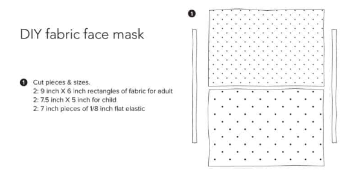
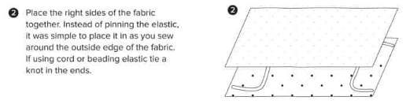
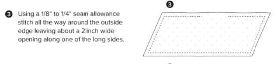
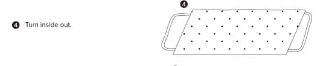
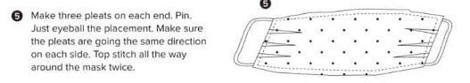

Mindenkinek maszkot!
A COVID-19 terjedése a maszkok használatával lassítható
Pontosabban arról, hogy mire jó a maszk
Első lépés

Első lépésben lehetséges hiba
Második lépés

Második lépésben lehetséges hiba
Harmadik lépés

Harmadik lépésben lehetséges hiba
Negyedik lépés

Negyedik lépésben lehetséges hiba
Ötödik lépés

Sokadik lépésben lehetséges hiba